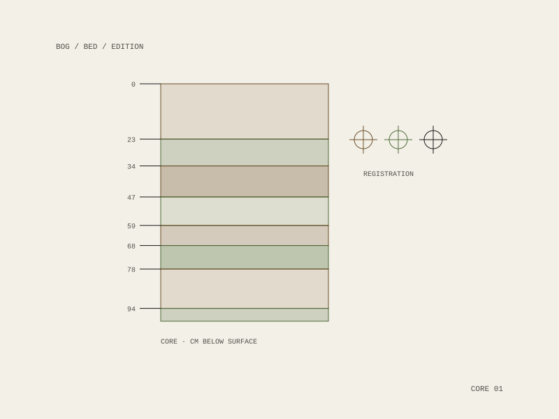

Peat and Repeat
Peat and Repeat is a 501(c)(3) nonprofit art edition house in Ridgewood, Queens. It produces artists’ prints and editions, photographs, books, and environmental projects — an independent, artist-run enterprise built on collective creative effort.

What it publishes
The imprint carries BOG, trouble and ephemera, alongside the Woodbine Art Auction and an apparel line. The range is deliberate: an edition house that only made prints would be a press, and the environmental projects are what keep the printed work tied to a place rather than to a market.
Why an edition
An edition is a form with a built-in politics. It fixes how many exist, states it publicly, and distributes the work at a price a person can actually pay — which is a different proposition from the unique object, and a different one again from the infinitely reproducible file.
The organization takes its bearings from a line of Louise Bourgeois’: “It is not so much where my motivation comes from but rather how it manages to survive.”
501(c)(3) nonprofit
Ridgewood, Queens, New York
BOG
trouble
ephemera
Woodbine Art Auction
apparel